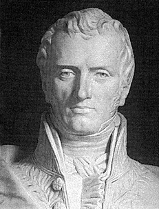
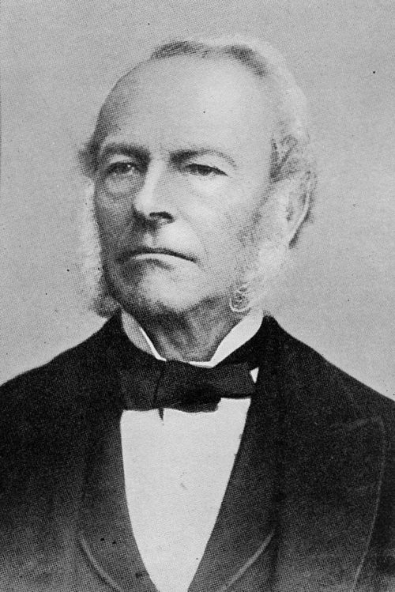
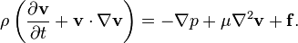
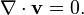

Navier-Stokes ekvationer
 
Navier-Stokes ekvationer är en uppsättning partiella differentialekvationer, vars lösning beskriver strömningen av en Newtonsk fluid och tryckfördelningen i densamma. De är en generalisering av Eulers ekvationer för viskösa fluider. Ekvationerna formulerades i början av 1800-talet och är uppkallade efter den franske fysikern Claude-Louis Navier och den brittiske matematikern och fysikern Sir George Gabriel Stokes. För en inkompressibel fluid, det vill säga en fluid med konstant densitet, kan Navier-Stokes ekvationer skrivas som

Här är \rho densiteten, v(x, t) hastigheten, p(x, t) trycket, \mu viskositeten och f representerar fördelade krafter (per volym), till exempel gravitationskrafter. Lösning av ekvationerna kräver dessutom begynnelse- och randvillkor, samt ett villkor för masskonservering, den så kallade kontinuitetsekvationen. För en inkompressibel fluid lyder denna

Eftersom ekvationerna i allmänhet saknar analytiska lösningar, har man historiskt varit hänvisad till enkla specialfall och förenklingar som leder till lösbara problem. Idag är det ofta möjligt att med kraftfulla datorers hjälp bestämma numeriska lösningar, men många problem kvarstår, inte minst vad gäller en djupare matematisk förståelse av lösningarna. Om detta handlar ett av millennieproblemen.
Foto: Wikipedia